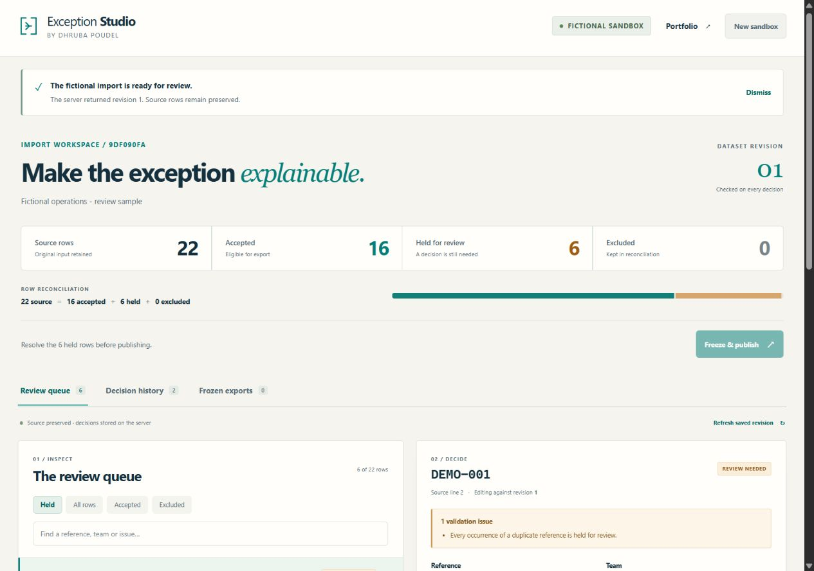
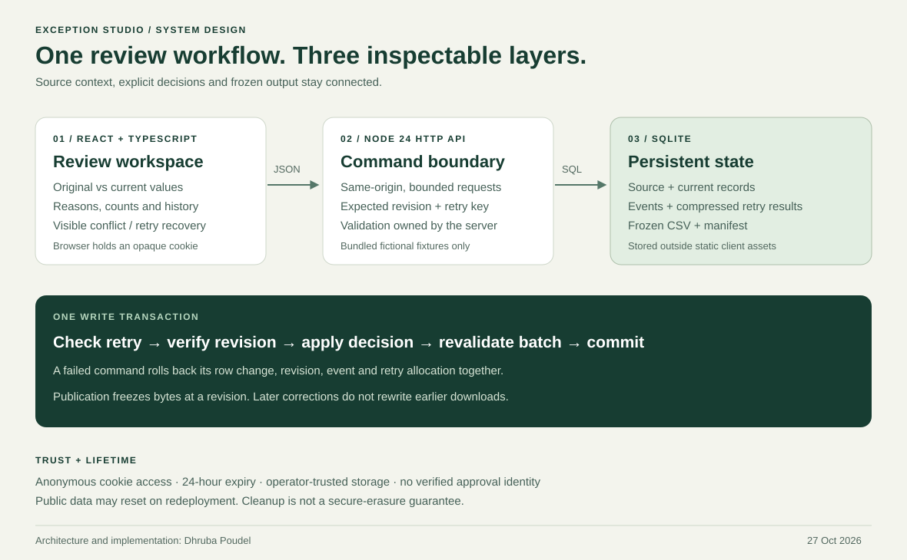

Original project · Full-stack software development
Exception Studio
Make the decisions behind a clean dataset visible.
- The problem
- Operational reports need an explained path from imperfect inputs to the records they include.
- My contribution
- An original React workspace, typed HTTP API, transactional SQL model and tests across the workflow.
- Engineering focus
- Source preservation, explicit review, concurrent edits, uncertain requests and reproducible output.

A clean chart should have an inspectable beginning.
An operational import can contain duplicate references, missing ownership, impossible dates or negative effort. Silently removing those records hides uncertainty. Replacing their original values removes the context needed to explain a correction.
I designed and developed Exception Studio around the step before reporting: keep the source, identify the exceptions, require an explained decision, and publish a stable reviewed result. The project uses a fictional service dataset so the complete workflow can be explored without customer or employer records.
Source rows = accepted + held + excluded. Every row remains accounted for, including records deliberately excluded from the export.
Rule clearance and human review are separate states.
The mixed sample begins with 22 rows: 16 accepted and 6 held. The inspector presents original and current values together. A reviewer can correct a record or exclude it, with a reason stored alongside the decision.
Consider the two fictional rows sharing reference DEMO-001. Correcting the second reference to DEMO-002 clears the first row’s duplicate issue. The first still remains held until it receives an explicit review decision. Resolving a cross-row rule does not silently approve an original exception.
- Load a bundled fictional source and inspect the held records.
- Correct or exclude each exception with an explained decision.
- Check the reconciliation and decision history.
- Freeze the revision when no held records remain.
- Download accepted CSV records and their matching JSON manifest.
A reproducible walkthrough produces 21 accepted records and one explained exclusion. The source remains unchanged. Later edits advance the current revision while the earlier publication retains its original bytes.
Consistency belongs in the server transaction.
The React client renders snapshots from a real same-origin Node API. SQLite stores the source, corrections, reasons, ordered events and publication files. Shared TypeScript contracts connect the interface to commands and response shapes; runtime validation remains on the server.

One command, one atomic result
A decision verifies the expected revision, applies the correction, revalidates the active batch, records its event and stores its retry response in one SQL transaction. An invalid correction rolls the operation back, including revision, history and retry-key allocation. Batch-wide validation also holds a previously accepted record if a later change makes it invalid.
Preserve context; freeze output
Original values and corrected values are separate. SQL triggers reject updates to protected source content and saved publication snapshots. Publishing stores CSV bytes and manifest JSON together, including reconciliation counts, source SHA-256, exported-data SHA-256 and dataset revision. Formula-leading spreadsheet cells are neutralised before the export hash is calculated.
These controls protect ordinary application operations. A trusted database operator can still alter the schema or files; the history is not a tamper-proof audit service.
A failed response is not proof that nothing happened.
Two editors may load the same revision. If one saves first, the other receives 409 rather than overwriting the newer decision. The interface preserves the unsaved correction until the reviewer deliberately reloads the current saved revision.
A different failure needs different handling: the server can commit a command while its response is lost. Import, decision and publication carry an idempotency key. An uncertain command is retried with its original key and body; the server returns the original successful response. Different content under the same key is rejected.
PATCH /api/rows/:id/decision
Idempotency-Key: example-review-001
{
"expectedRevision": 3,
"action": "accept",
"changes": { "team": "Service desk" },
"reason": "Assigned the fictional sample team."
}If starting a fresh sandbox produces an unreadable response, the browser may already hold a new cookie. The interface marks its displayed records stale and blocks editing until Reload session confirms the active workspace. It does not apply an old workspace’s edit to an unconfirmed session.
Test the cases that change whether the result can be trusted.
On 27 October 2026, 48 automated checks passed: 35 domain, persistent-store and HTTP checks, plus 13 UI checks. They exercise the actual backend and client recovery logic at their respective boundaries.
| Concern | Check | What it establishes |
|---|---|---|
| Competing decisions | Two concurrent HTTP decisions use one expected revision. | Exactly one succeeds; the other conflicts without applying a stale change. |
| Atomic correction | An invalid corrected row is rejected, then a valid retry reuses its key. | Rows, revision, events and retry allocation roll back together. |
| Uncertain outcome | A matching key/body replays the exact original response; a changed body conflicts. | A retry confirms the original command instead of duplicating its effects. |
| Source and export | Protected source updates fail; frozen CSV and manifest survive edits, another import and database reopen. | Current corrections do not rewrite preserved source or earlier publication bytes. |
| Review and reconciliation | Sticky duplicate review, excluded counts, date/effort boundaries and spreadsheet formula handling. | The asserted fixture and rule cases preserve the review model. |
| Client recovery | Stale edits, an unreadable mutation response and an uncertain cookie-switch response. | Recovery actions keep their intended command or reload the active session before editing resumes. |
| Demo boundaries | Cross-sandbox access, expiry, capacity, request limits, origin checks and private static paths. | The tested routes enforce their declared boundaries for those cases. |
The UI checks use a simulated DOM. Passing checks provide evidence for their assertions; they do not replace browser, accessibility, hosting or security review. This case claims no measured customer time saving or independent quality score.
Inspect the implementation, tests and engineering decisionsA useful public demonstration with explicit boundaries.
Each browser session receives an isolated anonymous sandbox through an opaque cookie. It expires 24 hours after creation. The application accepts bundled fictional fixtures only; review notes are transmitted and stored, so they must also remain fictional.
The system has no verified organisational identities, enterprise approval roles or production service guarantee. Normal process restarts retain data when the same SQLite file survives; public storage may reset on redeployment. Expiry cleanup is not a secure-erasure guarantee, and hosting records remain within the operator’s trust boundary.
The hosted application is available at studio.dhrub.com.np. The public HTTPS walkthrough was verified on 27 October 2026: import 22 fictional rows, complete six explicit decisions and freeze revision 7 with 21 accepted, 0 held, 1 excluded and 1,405 accepted minutes. The 1,270-byte CSV’s SHA-256 matched its manifest. The checked browser run produced no warning or error.
The HTTPS session cookie’s host-only scope, Secure, HttpOnly and SameSite=Lax attributes were also checked. These observations establish the demonstrated hosted workflow; automated failure cases and full accessibility review remain separate evidence. The repository documents local operation with Node 24 and pnpm, with no external API key or separate database service.